mistralai/mistral-small-3.2-24b-instruct
mean reward 0.831 · compile rate 95% · 84 valid rollouts. Blue = reference; green ≥ 0.9, orange ≥ 0.4, red below. Hover a tile for the generated OpenSCAD.
L1 · example 0 · mean 1.00 · max 1.00
Create an upright cylinder of height 55mm and diameter 20mm.

L2 · example 1 · mean 0.96 · max 1.00
Create a 75mm by 65mm plate of thickness 11mm with a centered 30mm-diameter through-hole.

 {
cube([75, 65, 11]);
translate([37.5, 32.5, 0]) cylinder(h=11, r=15, $fn=64);
}")
 {
cube([75, 65, 11]);
translate([(75-30)/2, (65-30)/2, 0]) cylinder(h=11, r=15, $fn=64);
}")
L3 · example 2 · mean 0.69 · max 0.71
An L-shaped bracket 20mm wide: a horizontal leg 65mm long and a vertical leg 30mm tall, both 10mm thick, joined at a right angle. The horizontal leg has a circular hole of radius 4mm through its center, drilled vertically.

 {
// Horizontal leg
cube([65, 20, 10]);
// Vertical leg
translate([0, 0, 20]) cube([20, 20, 10]);
// Circular hole in the center of the horizontal leg
translate([65/2, 20/2, 0]) cylinder(h=10, r=4, $fn=64);
}")
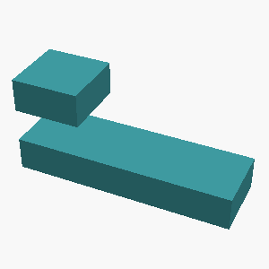
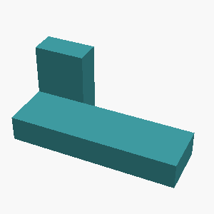
L4 · example 3 · mean 0.95 · max 1.00
A monument-like shape: a circular base plate of radius 40mm and thickness 10mm, with a cylindrical post of radius 8mm and height 50mm standing centered on top of it, and the post capped with a hemispherical dome of radius 8mm.

 {
// Base plate
cylinder(h=10, r1=40, r2=40, $fn=64);
// Cylindrical post
translate([0, 0, 10])
cylinder(h=50, r=8, $fn=64);
// Hemispherical dome
translate([0, 0, 60])
sphere(r=8, $fn=64);
}")
 {
cylinder(h=10, r1=40, r2=40, $fn=64);
translate([0,0,10]) cylinder(h=50, r=8, $fn=64);
translate([0,0,60]) sphere(r=8, $fn=64);
}")
 {
// Base plate
cylinder(h=10, r1=40, r2=40, center=false, $fn=64);
// Cylindrical post
translate([0, 0, 10])
cylinder(h=50, r=8, $fn=64);
// Hemispherical dome
translate([0, 0, 60])
sphere(r=8, $fn=64);
translate([0, 0, 60])
cylinder(h=8, r=8, center=true, $fn=64);
}")
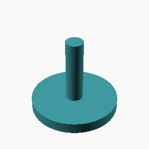
L1 · example 4 · mean 1.00 · max 1.00
A solid sphere with a radius of 20mm.

L2 · example 5 · mean 0.80 · max 0.81
A solid box 30mm x 20mm x 20mm with a rectangular notch 8mm wide and 7mm deep cut into the middle of its top face, running through the full depth of the box.

 {
cube([30, 20, 20]);
translate([11, 10, 20]) cube([8, 20, 20]);
}")
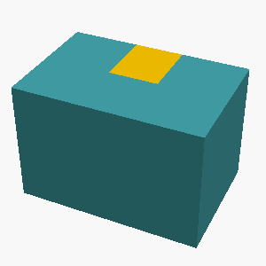
 {
cube([30, 20, 20]);
translate([11, 10, 20]) cube([8, 20, 7]);
}")
 {
cube([30, 20, 20]);
translate([11, 10, 0]) cube([8, 20, 20]);
}")
L3 · example 6 · mean 0.59 · max 0.85
An L-shaped bracket 35mm wide: a horizontal leg 30mm long and a vertical leg 70mm tall, both 5mm thick, joined at a right angle. The horizontal leg has a circular hole of radius 6mm through its center, drilled vertically.

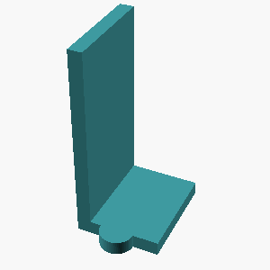
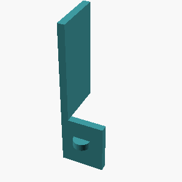
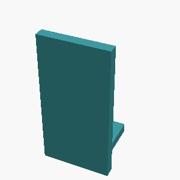
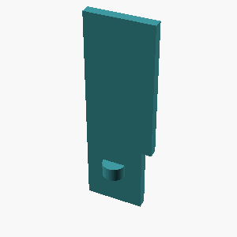
L4 · example 7 · mean 0.90 · max 1.00
A monument-like shape: a circular base plate of radius 40mm and thickness 5mm, with a cylindrical post of radius 23mm and height 30mm standing centered on top of it, and the post capped with a hemispherical dome of radius 23mm.

 {
// Base plate
cylinder(h=5, r1=40, r2=40, $fn=64);
// Cylindrical post
translate([0, 0, 5])
cylinder(h=30, r=23, $fn=64);
// Hemispherical dome
translate([0, 0, 35])
sphere(r=23, $fn=64);
}")
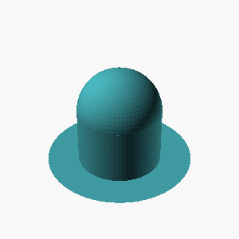
 {
// Base plate
cylinder(h=5, r1=0, r2=40, $fn=64);
// Cylindrical post
translate([0, 0, 5])
cylinder(h=30, r=23, $fn=64);
// Hemispherical dome
translate([0, 0, 35])
sphere(r=23, $fn=64);
}")
L1 · example 8 · mean 1.00 · max 1.00
Create an upright cylinder of height 70mm and diameter 80mm.

L2 · example 9 · mean 0.00 · max 0.00
Create a 70mm by 70mm plate of thickness 5mm with a centered 14mm-diameter through-hole.

 {
square([70,70], center=true);
translate([0,0,-2.5]) cylinder(h=5, r=7, $fn=64);
}")
 {
square([70, 70], center=true);
linear_extrude(height=5) square([70, 70], center=true);
translate([0, 0, 2.5]) cylinder(h=5, r=7, $fn=64);
}")
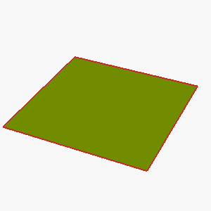
L3 · example 10 · mean 0.85 · max 0.85
A rectangular plate 125mm x 100mm, 8mm thick, with a 4 by 3 grid of circular through-holes of radius 8mm, spaced 25mm apart, the grid centered on the plate.

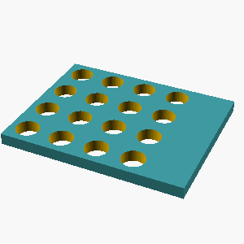
 {
// Create the rectangular plate
cube([125, 100, 8]);
// Create the grid of circular through-holes
for (x = [12.5, 37.5, 62.5, 87.5], y = [12.5, 37.5, 62.5, 87.5]) {
translate([x, y, 0]) cylinder(h=8, r=8, $fn=64);
}
}")
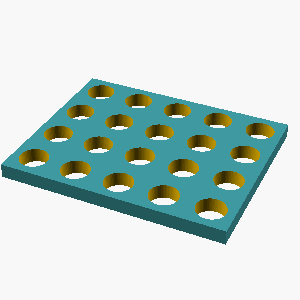
L4 · example 11 · mean 0.93 · max 1.00
A monument-like shape: a circular base plate of radius 40mm and thickness 10mm, with a cylindrical post of radius 17mm and height 35mm standing centered on top of it, and the post capped with a hemispherical dome of radius 17mm.

 {
cylinder(h=10, r1=40, r2=40, $fn=64);
translate([0,0,10]) cylinder(h=35, r=17, $fn=64);
translate([0,0,45]) sphere(r=17, $fn=64);
}")
 {
// Base plate
cylinder(h=10, r1=40, r2=40, center=false, $fn=64);
// Cylindrical post
translate([0, 0, 10])
cylinder(h=35, r=17, center=false, $fn=64);
// Hemispherical dome
translate([0, 0, 45])
sphere(r=17, $fn=64);
}")
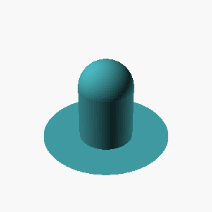
L1 · example 12 · mean 1.00 · max 1.00
Create a sphere 80mm in diameter.

;")
L2 · example 13 · mean 1.00 · max 1.00
A flat rectangular plate 75mm x 45mm, 10mm thick, with a circular hole of radius 8mm drilled through its center.

 {
cube([75, 45, 10]);
translate([37.5, 22.5, 0]) cylinder(h=10, r=8, $fn=64);
}")
L3 · example 14 · mean 1.00 · max 1.00
A stepped circular shaft standing upright, made of 3 stacked coaxial cylinders from bottom to top: a section of radius 35mm and height 15mm, then a section of radius 29mm and height 30mm, then a section of radius 11mm and height 25mm. Each section is narrower than the one below it.

 {
translate([0,0,0]) cylinder(h=15, r1=35, r2=35, $fn=64);
translate([0,0,15]) cylinder(h=30, r1=29, r2=29, $fn=64);
translate([0,0,45]) cylinder(h=25, r1=11, r2=11, $fn=64);
}")
 {
translate([0, 0, 0]) cylinder(h=15, r1=35, r2=35, $fn=64);
translate([0, 0, 15]) cylinder(h=30, r1=29, r2=29, $fn=64);
translate([0, 0, 45]) cylinder(h=25, r1=11, r2=11, $fn=64);
}")
L4 · example 15 · mean 0.88 · max 0.88
An upright hollow tube 75mm tall, outer radius 15mm, inner radius 11mm, open at both ends, with 3 circular holes of radius 4mm drilled radially through the wall at half the tube's height, evenly spaced around the circumference.

 {
cylinder(h=75, r1=15, r2=15, $fn=64);
cylinder(h=75, r1=11, r2=11, $fn=64);
translate([0, 0, 37.5])
rotate([0, 0, 0])
cylinder(h=75, r=4, $fn=64);
translate([0, 0, 37.5])
rotate([0, 0, 120])
cylinder(h=75, r=4, $fn=64);
translate([0, 0, 37.5])
rotate([0, 0, 240])
cylinder(h=75, r=4, $fn=64);
}")
 {
cylinder(h=75, r1=15, r2=15, $fn=64);
cylinder(h=75, r1=11, r2=11, $fn=64);
translate([0, 0, 37.5])
rotate([0, 0, 0])
cylinder(h=75, r=4, $fn=64);
translate([0, 0, 37.5])
rotate([0, 0, 120])
cylinder(h=75, r=4, $fn=64);
translate([0, 0, 37.5])
rotate([0, 0, 240])
cylinder(h=75, r=4, $fn=64);
}")
 {
cylinder(h=75, r1=15, r2=15, $fn=64);
cylinder(h=75, r1=11, r2=11, $fn=64);
translate([0, 0, 37.5])
intersection() {
for (i = [0, 1, 2]) {
rotate([0, 0, i * 120])
cylinder(h=22, r=4, $fn=64);
}
cylinder(h=75, r1=11, r2=15, $fn=64);
}
}")
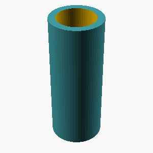
L1 · example 16 · mean 0.69 · max 0.93
A solid cone 65mm tall with a base radius of 15mm, point facing up.


cylinder(h=65, r1=0, r2=15, $fn=64);")
 cylinder(h=65, r1=0, r2=15, $fn=64);")
 rotate([180,0,0]) cylinder(h=65, r1=15, r2=0, $fn=64);")
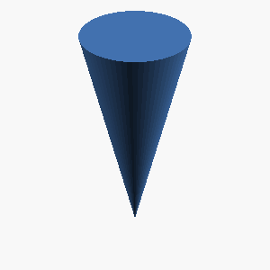
L2 · example 17 · mean 0.92 · max 1.00
Create an upright open-ended pipe: height 20mm, outer diameter 40mm, wall thickness 3mm.

 {
cylinder(h=20, r=20, $fn=64);
cylinder(h=20, r=17, $fn=64);
}")
 {
cylinder(h=20, r1=20, r2=20, $fn=64);
cylinder(h=20, r1=17, r2=17, $fn=64);
}")
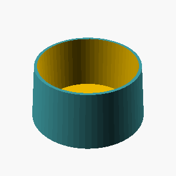
L3 · example 18 · mean 0.62 · max 0.62
A stepped circular shaft standing upright, made of 3 stacked coaxial cylinders from bottom to top: a section of radius 29mm and height 25mm, then a section of radius 20mm and height 30mm, then a section of radius 8mm and height 15mm. Each section is narrower than the one below it.

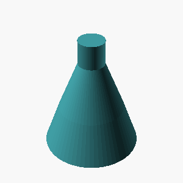
L4 · example 19 · mean 0.67 · max 0.67
A gear-like disc 6mm thick with radius 35mm, with 12 rectangular teeth evenly spaced around its rim. Each tooth is 6mm wide and extends 10mm radially outward from the rim, spanning the full thickness of the disc.

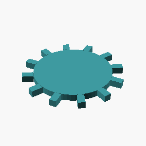
 {
// Main disc
cylinder(h=6, r=35, $fn=64);
// Teeth
for (i = [0:11]) {
rotate([0, 0, i * 30]) {
translate([35, 0, 0]) {
cube([10, 6, 6]);
}
}
}
}
gear_disc();")
 {
// Main disc
cylinder(h=6, r=35, $fn=64);
// Teeth
for (i = [0:11]) {
rotate([0, 0, i * 30])
translate([35, 0, 0])
cube([6, 10, 6]);
}
}
gear();")
L1 · example 20 · mean 1.00 · max 1.00
Create an upright cylinder of height 50mm and diameter 70mm.